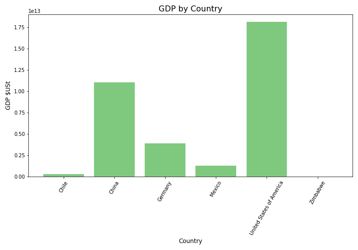

Life Expectancy & GDP
Initial findings
GDP
GDP by country follows expected economic lines, with the US out in front, followed by China, the world's second-largest economy. Germany, Europe's largest economy comes next. Mexico, which has benefited from the relocation of several US industries remains ahead of Chile, which is one of the leading economies of South America. Zimbabwe, which went through economic convulsions in the early 2000s, achieving an unemployment rate of 94% in 2008, unsurprisingly fares worst of the countries studied.
Life expectancy
The relationship between GDP and life-expectancy is low, with Germany and Chile having the highest life-expectancy, but all countries apart from Zimbabwe have similar life expectancies. Zimbabwe's relatively poor performance can be attributed in part to the wider economic malaise, which has led to under-investment in healthcare infrastructure and the loss of trained staff from the sector.

Looking more closely at the spread of life expectancy, we can see that
in all countries, apart from Zimbabwe, life expectancy has been
reasonably stable. China has also seen a more dramatic change than other
economies, which may be linked to China's growing middle class and
economic development.
In Zimbabwe, the years studied have seen unprecedented challenges for
the economy, with the first decade of the new millennium having seen the
onset of the
'Zimbabwe Crisis', a confluence of botched land reform, economic mismanagement and
hyperinflation, which reached 271 million percent between 2007 and 2008.
The already small, ill-functioning economy shrunk by 30% between 2000
and 2010. Over 2 million jobs were lost in the periods studied. Along
with these economic factors, Zimbabwe has been hard hit by AIDS, with
roughly a quarter of the adult population
believed to have HIV/AIDS in 2003. In 2005, only 23,000 of an estimated
321,000 people in need, were receiving treatment for HIV/AIDS. Following
this devastation, real progress has been made more recently in health
outcomes, which have led to great improvements in life expectancy.
Tracking changes by year
GDP
The key trend of the years 2000 to 2015 was the economc rise of China. China's economic output was smaller than that of Germany at the turn of the millennium, since when it has accelerated industrialization and development to race into the position of second-largest global economy. The US economy has also grown significantly in this time, but not at the same rate as China's. China is expected to overtake the US in the coming decades.

Life expectancy
In all countries other than Zimbabwe, life expectancy grew modestly across the period studied. In Zimbabwe, life expectancy fell during the 'Zimbabwe crisis' of the early 2000s. Zimbabwe had the dubious honour of having the world's shortest life expectancy in 2006, before recovering dramatically, albeit still lagging behind every other country in this study. This increase in life expectancy has been associated with the formation of a government of national unity, which began addressing and reversing some of the structural failings of the Zimbabwean economy.